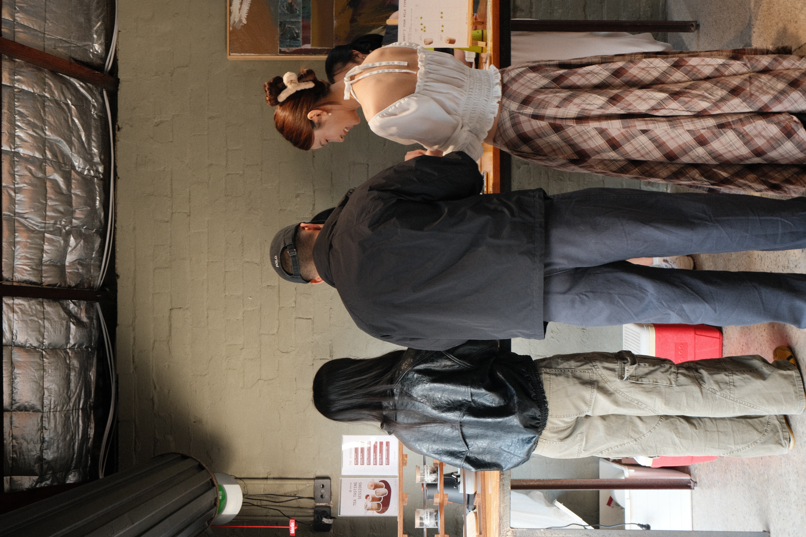
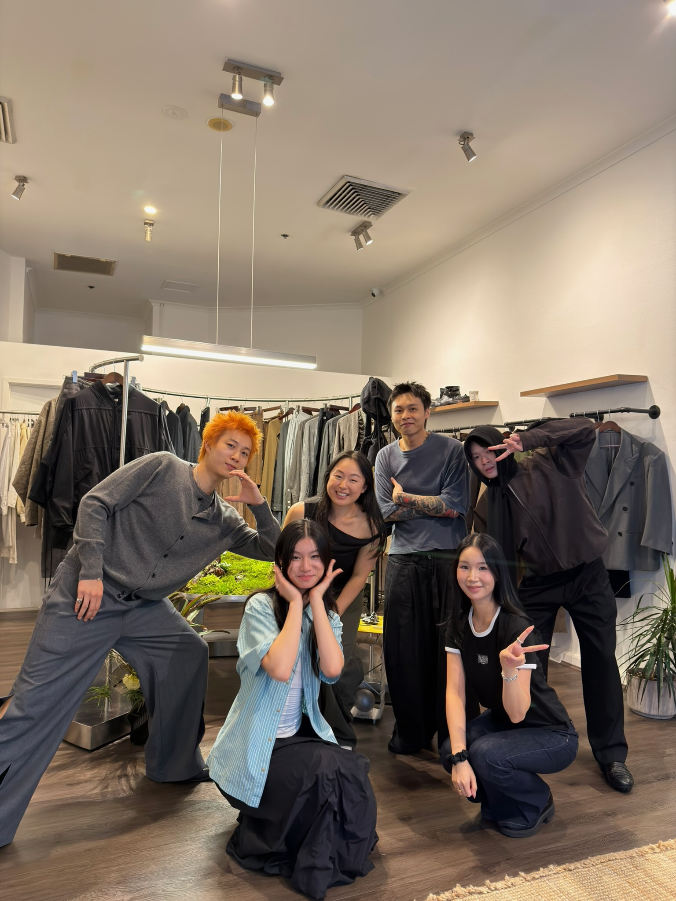
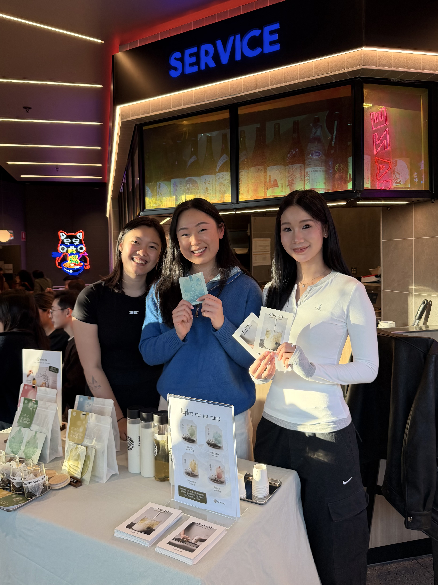
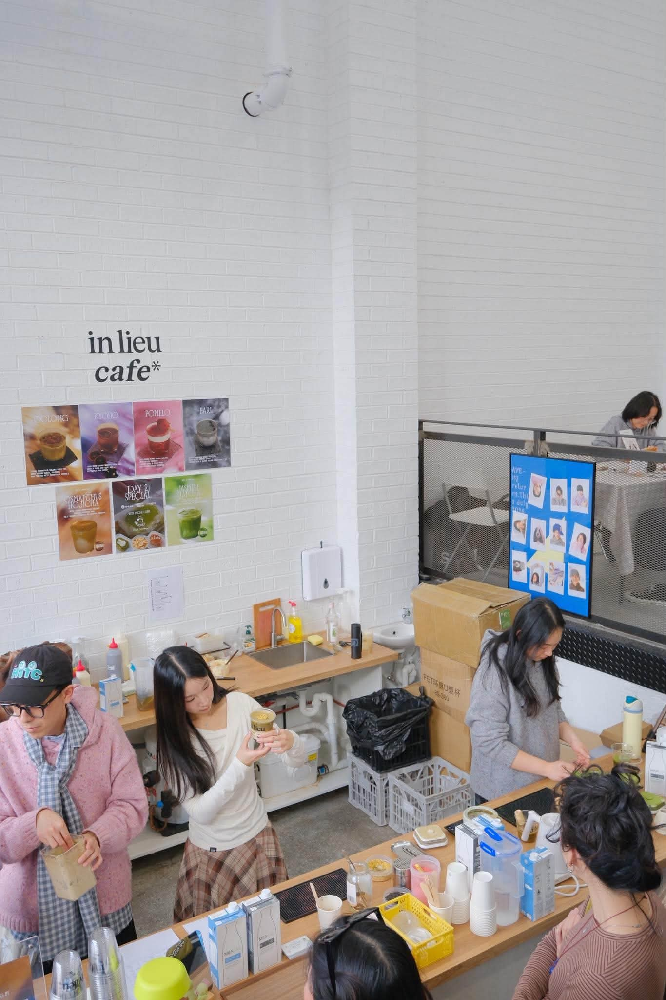

You've carefully sourced high quality tea leaves of distinctive flavours.
You've curated a visual and cultural identity that is loved and validated by the audience.
You've built a social following over 9k in 10 months that talks about CHAWU unprompted.
You've hosted pop-ups that put the product directly in people's hands — and change their minds.
You've developed a working ecommerce engine, with channels and partnerships in motion.
I've been involved beyond just being a customer — helping CHAWU get in front of new people and seeing how they respond firsthand.
I've sold directly, pitched CHAWU to new audiences, and helped shape ideas around strategy, direction and new channels.
Most importantly, I've been thinking about where the next wave of growth can come from — and how we can test it.




I’m establishing the customer journey for originating a specialised lending product across a complex, fragmented environment spanning multiple systems. My role is to take an ambiguous problem, map the experience end-to-end, and turn it into a clear roadmap, priorities and next moves.
I’ve structured the prioritisation of a technology issue affecting both customers and internal teams, balancing impact, effort and commercial risk. I’ve also negotiated a partnership change that resulted in $150K in savings.
I launched the entry of an existing product into a smaller customer segment within four months, taking it from strategy to market through capability sessions, customer activations and customised sales collateral.
I’m introducing alternative data sources for my product, working directly with data teams to define the scope, requirements and future-state process. Today, obtaining these data points is highly manual; automating not only removes time for analysis but increases accuracy of performance.
I successfully delivered the manual migration of existing customers from an old product system to a new one — establishing the customer and internal journeys, coordinating multiple stakeholders and managing a 30-person team against a tight timeline.
How CHAWU enters new markets and customer segments through viral campaigns and unique activations.
Strategically prioritise who CHAWU should work with and build the blueprint for ongoing relationships.
Building a repeatable B2B channel with optimal pricing model.
Testing, measuring and scaling customer acquisition based off what the numbers tell us.
A curated CHAWU tasting gives office managers and teams a low-friction way to experience the product.
Monthly or quarterly tea replenishment, sized to headcount - predictable revenue for CHAWU, zero hassle for the office.
Once CHAWU is in the kitchen, introduce gifting, events, new blends and additional offices.
Happy teams become introductions to other companies, founders, HR teams and office managers.
Make something neither brand would make alone — limited-edition tea, a dessert pairing, a co-branded product, an exclusive menu.
Give people a reason to show up — launch events, pop-ups, Pilates mornings, fashion events, tea tastings.
Turn the collaboration into content — both brands post, creators experience it, UGC gets generated, email audiences are reached.
Give the new audience somewhere to go — an exclusive CHAWU code, a limited drop, a bundle, a new-customer offer, retargeting.
A post-class tea experience for the studio's members.
Tea served at a launch event, matched to the collection.
Mix tea tasting and activations to invigorate Australian weekend life
I genuinely love Chinese tea, and the whole world around specialty drinks.
I've loved helping at CHAWU's pop-ups because I get to see the moment someone tastes the product, understands it, and gets excited about it.
I also want to understand what it actually takes to build a business — not from the sidelines, but by taking responsibility for a part of it.
I believe CHAWU has something worth building.
And I think I can help build it.